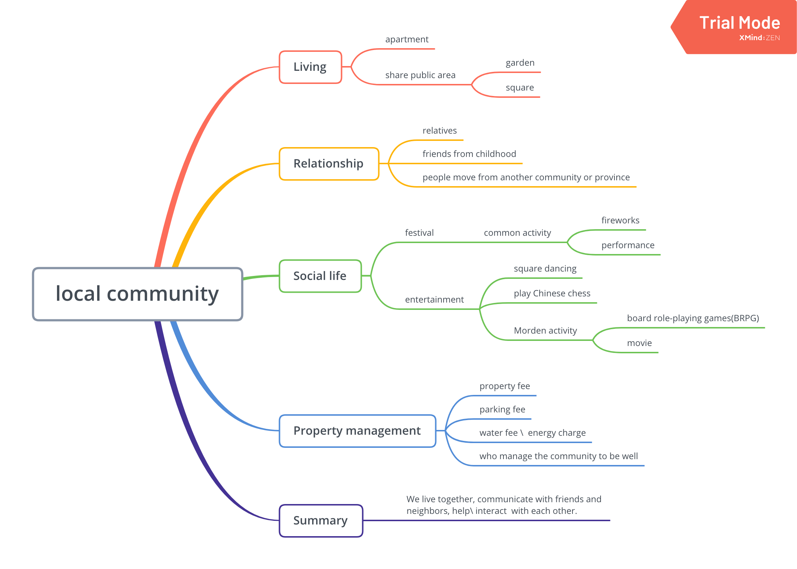
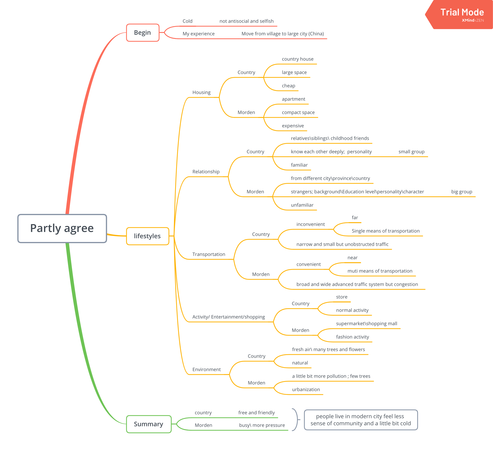
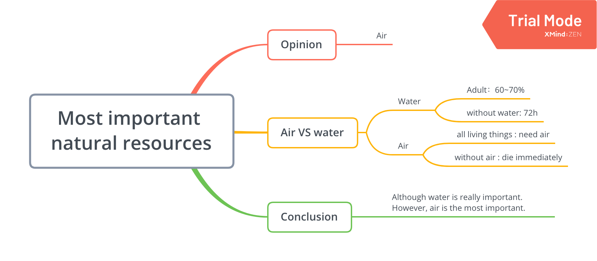
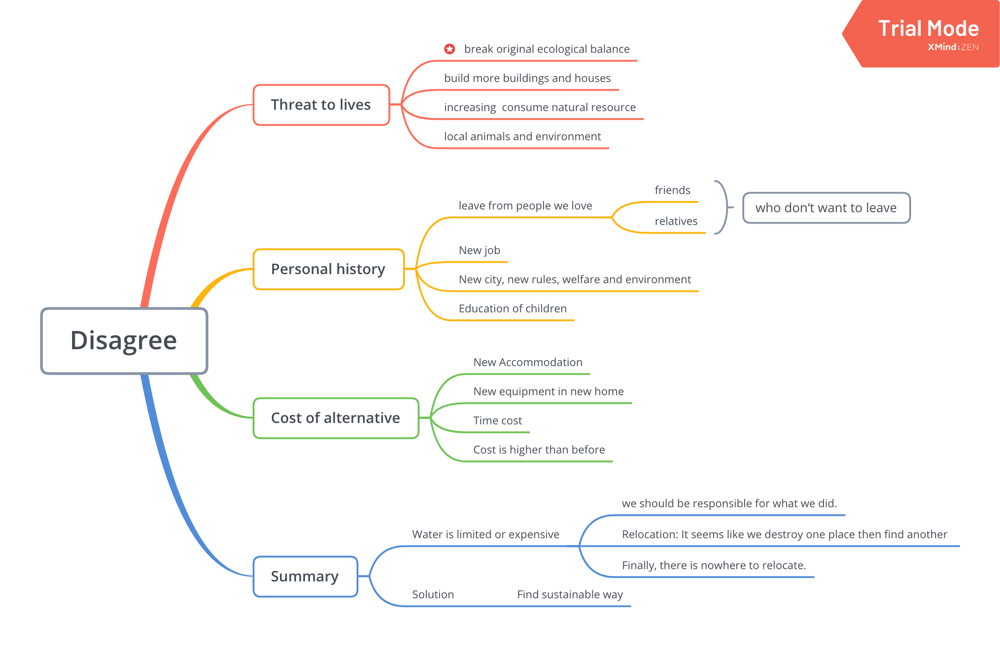
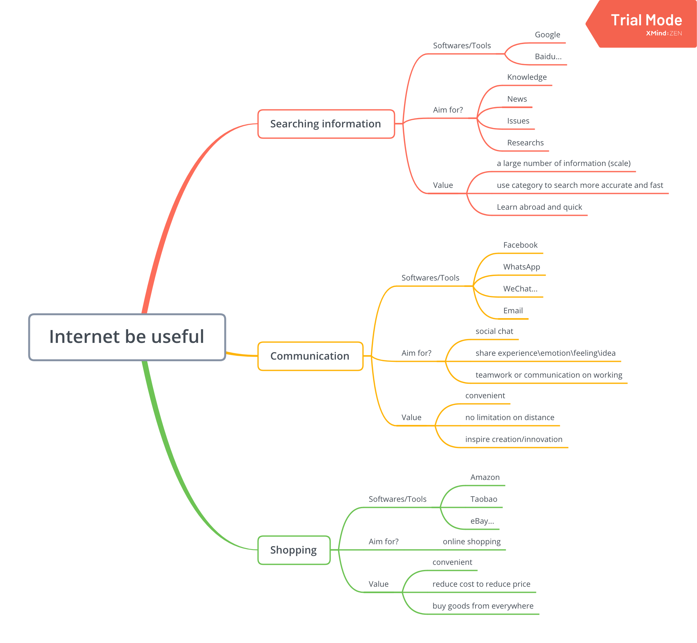
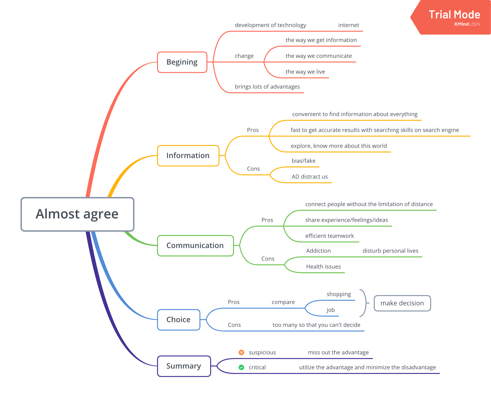

1. Big Cities
1.1. PART 1 (1 min)
Examiner: My name is (examiner’s name) and I will be asking you some questions. Now, in this first part, I’d like to ask you a question about the topic of the community.
- What is the local community like where you come from?

1.2. PART 2 (4 mins)
Examiner: I will give you a card with an opinion based on the topic of the community, and you will have to say how far you agree or disagree. You have to talk about this for 2 minutes. You have 2 minutes to think about what you are going to say and make some notes. You can choose whether to use the prompts on the card or your own ideas and you can ask me about vocabulary on the card if you want to. Okay?
- Give the candidate 2 minutes to read the task card and prepare for their monologue – they may make notes.
1 | Statement: |
After 2 minutes, prompt the candidate to begin
Examiner: Alright? You have 2 minutes for this. I will take some notes while you are speaking and I’ll tell you when the time is up. Can you start speaking now please?
Candidate speaks. Stop the candidate after 2 minutes.
Examiner: Thank you, now we will move on to part 3 of the examination.
1.3. PART 3 (3-4 mins)
Ask the candidate one follow-up question based on the content of their monologue.
- Examiner: I would like to ask you some further questions about the points you made in your talk.
- You said that…. Why do you think this is true?
- I didn’t follow what you said about…? Could you go over that again, please?
- Why do you believe that …. is the most important concern?
- Additional questions for building a discussion. Ask the candidate two questions:
- For what different reasons do people move to live in cities?
- career development
- education of children
- comprehensive public facilities(living quality)
- How is life different in small rural communities compared to cities?
- slow
- peace
- natural
- What is your definition of a good neighbour?
- friendly / Nice
- help with each other
- Respect your neighbours and their property
- Don’t block stairways or entries
- Be a responsible pet owner
- Don’t make excessive noise
- Try and resolve issues with your neighbours directly first
- Do you think there can be a sense of community in the city? Why/ why not?
- Yes; sense of belonging
- social activities
- social welfare
- reasonable price of commodities
- health insurance
- retirement protection
- For what different reasons do people move to live in cities?
- After 4 minutes (maximum)
Examiner: Thank you. That is the end of the examination.
Collect all exam papers/notes from the candidate.
2. Water and Migration
2.1. PART 1 (1 min)
- Which are the most important natural resources, and why?

2.2. PART 2 (4 mins)
1 | Statement: |

2.3. PART 3 (3-4 mins)
- How important is the natural resource of oil these days?
- Is it okay to damage the environment in order to extract natural resources (Why/ why not?)
- Which natural resources do you think will be the most important in the future?
- Why do natural resources sometimes cause disagreements and conflicts between countries?
3. Tourism
3.1. PART 1 (1 min)
- Why do so many people want to travel abroad these days?
3.2. PART 2 (4 mins)
1 | Statement: |
3.3. PART 3 (3-4 mins)
- What are the dangers of travelling independently in foreign countries?
- Do you think tourist visas should be more difficult to obtain? (Why/ why not?)
- How is the experience of travelling different if you try and speak the language of the country you are visiting?
- Why do you think local people in certain places can be hostile to tourists?
4. Waste and Pollution
4.1. PART 1 (1 min)
- What can people do to help protect the environment?
4.2. PART 2 (4 mins)
1 | Statement: |
4.3. PART 3 (3-4 mins)
- How can careless attitudes to pollution affect the future of children?
- Why aren’t some countries able to manage pollution control more effectively?
- What do you think are the most important steps to take to protect the environment?
- Do you think that fining people who produce pollution would be an effective solution to the problem?
5. Technology and internet
5.1. PART 1 (1 min)
- In what different ways can the internet be useful?
 - Some useful ideas: Everyday Internet Impact
- Uses of the Internet in Students daily life
- Uses of the Internet to increase the speed of daily tasks
- Uses of the Internet for business promotion and innovation
- Uses of the Internet for shopping in our daily life
- Use of the Internet for research and development
- Use of the Internet provide us quick and free communication
- International uses of the Internet by working remotely and providing business services
- Uses of the Internet in Money Management
- Uses of the Internet in Everyday Politics
- Uses of the Internet for Teaching and Sharing Knowledge with others
- Solving the problems of others by the use of internet
- Uses of the Internet in Cashless Economy
- Uses of the Internet in environmental development
- Uses of internet for parents
- Uses of Internet in Tour and Travel
- Government policies and schemes are easily accessible by the use of the Internet
- Invention Engine
5.2. PART 2 (4 mins)
1 | Statement |

5.3. PART 3 (3-4 mins)
- What do you think is the greatest advantage the internet has brought?(Why?)
- Globalization
- share ideas all over the world (creative)
- multiculture: learn different culture from other country
- global economy
- Do you think technology has helped to improve people’s lives?(Why / Why not?)
- Yes
- washing machine
- public transportation
- computer(AI)